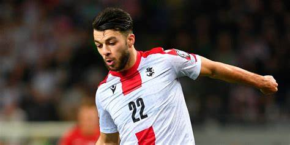
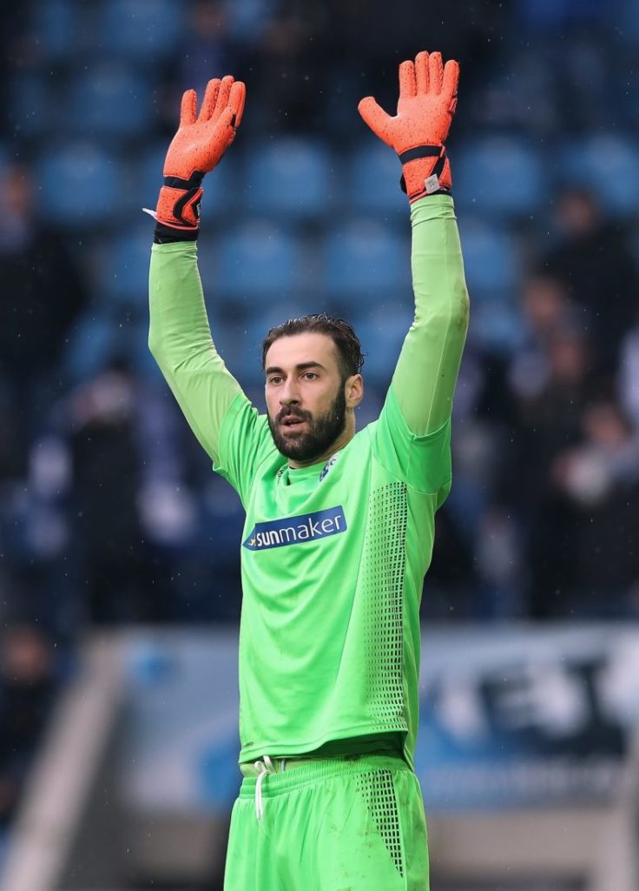
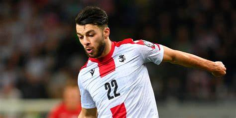
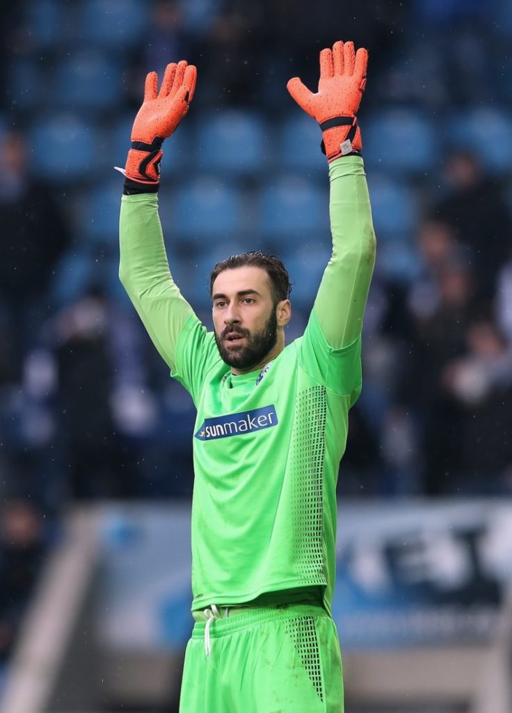

The Georgia national football team (Georgian: საქართველოს ეროვნული საფეხბურთო ნაკრები, romanized: sakartvelos erovnuli sapekhburto nak'rebi) represents Georgia in men's international football matches, and is controlled by the Georgian Football Federation, the governing body for football in Georgia. It is a member of UEFA in Europe and FIFA in global competitions.
The Georgian team's first match took place on 27 May 1990 against Lithuania, while Georgia was still part of the Soviet Union. The team have attempted to qualify for each major tournament from Euro 1996 onwards. Their efforts culminated in their first successful qualification for a major tournament, the UEFA Euro 2024, secured with a win against Greece in the UEFA Euro 2024 qualifying play-off final.
The team is colloquially referred to as Jvarosnebi (The Crusaders) and has adopted Saint George as their symbol, which is a patron of Georgia.
Upon its admission into FIFA ranked 156th, Georgia ascended to their peak World Ranking of 42nd in 1998. The team plays their home games at the Boris Paichadze Dinamo Arena in Tbilisi.
.jpg)
.jpg) 


